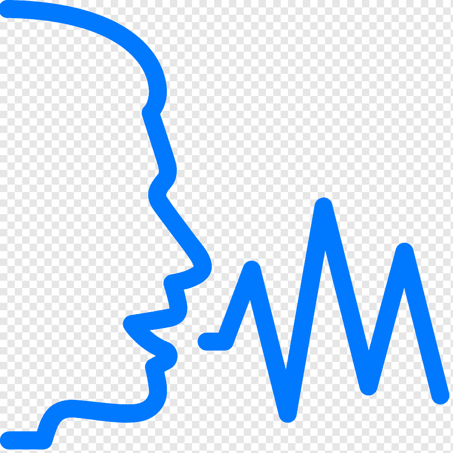
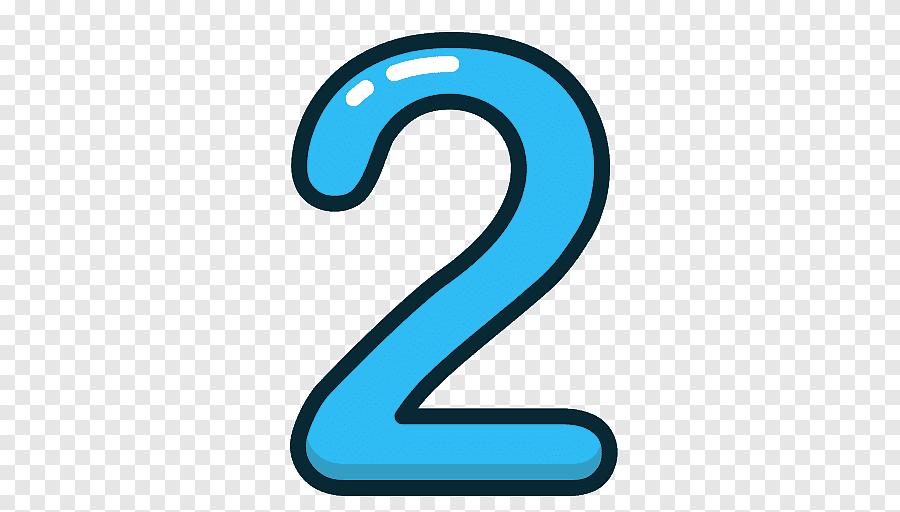

We are going to learn the conditionals from Cero to 3 and the passive voice

The passive voice in English
The basic structure of the passive voice in English is made up of the past tense form WAS/WERE,
followed by the past participle of the main verb.
An example is the sentence “the house WAS BOUGHT by one of the neighbors”. (La casa fue comprada por uno de los vecinos).
The "zero conditional"
The zero conditional (type 0) is used to state a real general condition and its logical result.
It is the conditional that expresses universal laws of invariable compliance.
For example: If you heat water up to 100°, it boils. (Si calientas agua hasta 100°, hierve).
The "type 1 conditional"
The first conditional is used when we talk about something that is likely to happen in the future.
The main formula and the one most used is If + Simple Present + Subject + Simple Future (Will).
If Andrew arrives late again, they will fire him. (Si Andrew llega tarde otra vez, le echarán).

The "type 2 conditional"
The structure for the second conditional is (sentence with infinitive verb) + would + if + Condition
(sentence with conjugated verb in past simple). For example: If I won the lottery, I would buy a house.
(Si me ganara la lotería, me compraría una casa).
The "type 3 conditional"
The third conditional or type 3 conditional is a structure used to express a hypothetical
condition in the past and its imaginary result.
For example: If Amy had gone to the party, she would have had a good time. (Si Amy hubiera ido a la fiesta, la habría pasado bien).
The passive voice in English
In English, the passive voice is made up of two main elements:
the corresponding form of the verb 'to be' followed by the past participle.
Switching to passive voice in English will make your texts more formal.
The structure of the passive voice is as follows:
Direct object + verb to be + past participle + by + subject
The "zero conditional" In English
The "zero conditional" is used when the time we are referring to is now or forever and the situation is real and possible.
This type of conditional is usually used to talk about general facts. The verb tense of both propositions is the "simple present."
In type 0 conditional sentences, the term "if" can usually be replaced by "when" without changing the meaning.
The "type 1 conditional" In English
The "type 1 conditional" is used to refer to the present or future when the situation is real.
The type 1 conditional refers to a possible condition and its probable outcome.
In these sentences, the "if" clause takes the "simple present" and the main clause takes the "simple future."
The "type 2 conditional"In English
The "type 2 conditional" is used to refer to a time that can be now or at any time and to a situation that is not real.
These sentences do not allude to facts. The type 2 conditional is used to refer to a hypothetical condition and its probable outcome.
In these sentences, the "if" clause adopts the "simple past" and the main clause the "present conditional".
The "type 3 conditional" In English
The "type 3 conditional" is used to refer to a time located in the past and a situation contrary to reality.
It is based on facts that are opposite to what is being expressed. The type 3 conditional is used to refer to a
condition in the past that is not real, as well as its probable outcome in the past.
In these sentences, the "if" clause takes the "past perfect" and the main clause takes the "perfect conditional."
Frequent questions
What are conditionals?
A conditional sentence is based on the word “if.” There are always two parts to a conditional sentence:
one part that begins with “if” to describe a possible situation and the second part that describes the consequence.
For example: If it rains, we'll get wet.
what is the passive voice?
The passive voice is used to show interest in the person or thing that is the object of an action,
rather than the person or thing that performs the action. In other words,
the most important person or thing becomes the subject of the sentence.
Ready to learn conditionals and passive voice in English?
Don't be afraid, whenever it gets complicated we can help you